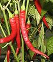
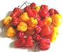
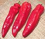
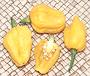

SAFARI
Users
This page has evolved into a master index. Detail information on each chili will be found on its regional page. This is by no means a comprehensive list, but just a short list of chilis typical of, or important to, various regions of the world.
History
- and general informationBuying, Storing & Working with Chilis
- Methods and HintsVarieties, Fresh & Dried
Chili Powders & Flake
- including some mixesSauces & Potions
- common and uncommon varieties.Health Considerations
- are hot chilis safe?Hotness
- heat scale and chartLinks
- to other Chili sites
History
The chili, including bell peppers ("capsicum" in GB) are all descended from plants native to Central and South America - even the species chinense, mistakenly named by a botanist who saw them in China. They were in general use throughout the Americas for thousands of years before Europeans first landed in the New World.
The Portuguese are most responsible for inflicting hot chili peppers on the world. They took to them right off and transported them to Africa and to their trading post in Goa, India and elsewhere in Asia. Dried red chilis are light, long lasting and contain mature, eager to sprout seeds, so chilis quickly spread everywhere traders traded.
Some maintain, particularly regarding Eastern Europe, that some chilis came to there from China and point to differences between paprika and pimento peppers, but those chilis probably entered Eastern Europe through India and Turkey, descendants of those brought from Brazil by the Portuguese (and would differ from Spanish chilis brought from Mexico).
The hottest chilis are particularly appreciated in the tropics because they induce sweating which makes the body feel cooler. This is less appreciated in the Frozen North but heat-free bell peppers are appreciated everywhere.
Today it's as difficult to imagine Thai or Indian cuisine without chilis as it is to imagine Italian cooking without tomatoes or Irish without potatoes, but chilis, tomatoes and potatoes were all unknown in Europe and Asia before 1500.
Varieties
While wild species of Capsicum also exist, there are five domesticated species:
C. annuum:
To this species belong a number of mild, medium and very hot chilis: Bell Peppers, Wax Peppers, Jalpeños, Cayenne, Thai Chilis, Anaheims and other New Mexico varieties. These chilis ripen pointing down.C. frutescens:
This species contains some pretty hot chilis, including Tabasco, Malagueta, and Piri Piri. These chilis ripen pointing up.C. chinense:
The origin region for these chilis is Brazil, and they include the hottest peppers: Habanero, Scotch Bonnet, Naga (Ghost Pepper), Datil, and hybrids developed by the super-hot chili sauce makers.C. pubescens:
The only commercial variety is the Rocoto (Mexican Manzana). It is very important in Peru and Bolivia, and to a lesser extent southern Mexico and Southern California.C. baccatum:
These are very important in South America, and include: Aji Amarillo, Aji Panca, Aji Limo, and quite a few others used locally.
Our list covers mostly chilis you are likely to find available for purchase in the North America, (particularly California), or which are important to a particular cuisine. It's just a tiny fraction of the known named varieties - trying to list them all is as futile as the ancient Egyptian priests' trying to catalog all the gods and goddesses of the Nile Valley - new ones appeared and the old ones changed before the catalog was done. That doesn't stop some people from trying though.
The chilis pictures and the hotness ratings (Hotness Table) are from Southern California and Mexican grown examples and results may differ elsewhere. Caution: The heat ratings are typical, but actual variation is wide depending on soil, weather and the perversity of chili plants. Always test to avoid disappointment (or devastation).
African Chilis
[C. chinense, C. annuum, C. frutescens]
Chilis were introduced to Sub-Saharan Africa by the Portuguese, and
through the Slave Trade with the Caribbean and Brazil. Today, cuisines
of the region without chilis would be unthinkable. Chilis probably
arrived in North African during the Spanish occupation of Tunisia between
1535 and 1574.
List, Details and Descriptions.
Aci Sivri Biber
 [Capsicum annuum]
This chili is very popular in Turkey, and has spread into the Balkans
and Eastern Europe, and no doubt into Armenia. Hotness
H6-H8. For details see our
Anatolia, Caucasus, Levantine
Chilis page.
Adjuma
 [Aji Umba, Dji Oema Ning (Suriname (lit. "Your name is woman")); C. chinense]
This extremely hot chili (
H10), originally from Brazil, is very important in Suriname.
For details see our
Chilis of the Caribbean page.
Aji Amarillo
- [C. baccatum var. pendulum]
A very important Chili in Peru and Bolivia, hotness about
H7, but variable. For details
see our Aji Amarillo page.
Aji Charapita
- [Wild Chilean Chili Pepper; Cumari (Brazil); C. chinense]
A tiny Chili very popular in Peru, and also used in Brazil, hotness
H8. For details see our
South American Chilis page.
Aji Crystal
- [Aji Verde; C. baccatum]The dominant chili in Chile, moderately hot at
H5. For details see our
South American Chilis page.
Aji Dulce
- [C. chinense]
A variety of the fierce Scotch Bonnet that has no heat - much used in
Puerto Rico, Cuba, and Dominican Republic. For details see our
Caribbean Chilis page.
Aji Limo
- [C. baccatum var. pendulum]A chili much used for Ceviches on the north coast of Peru, hotness
about H8. For details see
our South American Chilis page.
Aji Mirisol
- [C. baccatum var. pendulum]These are dried Aji Amarillo. For details see our
Aji Amarillo page.
Aji Panca
- [C. baccatum]The second most popular chili in Peru, very mild with a berry-like
taste (H8). For details see
our Aji Panca page.
Aji Rocoto / Locoto
- [Manzana; C. pubescens]A chili type popular from central Mexico to Peru, hotness
H8. For details see our
Manzana / Rocoto Chilis page.
Aleppo Pepper
[Halaby (Arab); Capsicum annuum]
This important pepper has been long grown around the city of Aleppo in
northern Syria. Hotness (H6)
For details see our Anatolia,
Caucasus, Levantine Chilis page.
Anaheim
[Long Green, California Green, Chili Verdi, Chili Colorado (when ripe), California Chili (when red ripe and dried); C. Annuum]
Fresh green, 6 to 11 inches by 2 inches. These mild
(H2) are very similar to the
New Mexico Chili. For details
see our Mexican Chilis page.
Anatolia, Caucasus, Levantine Chilis
[C. annuum]
Countries included in this section are Armenia, Azerbaijan, Georgia,
Palestine, Syria, Turkey, Israel, and possibly some Egypt. As far as we
can tell, the Turks got chilis from Spanish traders in the 1500s, and
they spread from there to the Levant, Caucasus and Balkan regions, and as
far as Hungary.
List, Details and Descriptions.
Ancho
- [C. annuum]The dried form of the the
Poblano, (shown to the left). H1-H2, 2 to
4 inches, very sweet and flavorful. For details see our
Mexican Chilis page.
Arbol
- see de ArbolArmenian / Turkish Chilis
See Anatolia, Caucasus, Levantine Chilis.
Ata Ijosi / Ata Wewe
[C. Frutescence] These Bird Chilis are probably the hottest chilis grown in Africa, quite popular in Nigeria. For details see our African Chilis page.
Baklouti
[C. annuum]
This is the favorite chili for making the famous Harissa Sauce of
Tunisia, hotness about H3. For
details see our Afrcan Chilis
page.
Bell Peppers
[Capsicum (British); Shimla mirch (India); Prik Pasom Sot (Thai); C. annuum var. grossum]
Important in nearly all cuisines worldwide, in various colors. Always
sold fresh, they have no heat (H0).
For details see our
Mexican Chilis page.
Striped Holland / Aloha® Pepper
[Capsicum (British); C. annuum var. grossum]
A varigated variety of Bell Pepper, (
H0). For details see our
Mexican Chilis page.
Baby Bell Peppers
[Capsicum (British), C. annuum]
Fresh red, green, yellow and orange, hotness
H0. These look a lot like
Gypsy Peppers but have much
thicker walls, more flavor and are usually very sweet. For details see our
Mexican Chilis page.
Bird's Eye Chilis, Bird Chilis
A generic term for small, usually very hot, chili pods that grow erect (pointing upward) and are eaten and dispersed by birds. For details see our Mexican Chilis page.
Bishop's Crown
[C. baccatum var. pendulum]
This oddly shaped chili is probably native to the region around Bolivia,
hotness H2.
For details see our South American
Chilis page.
Black Pearl
[C. annum]
Developed in Colombia, highly decorative, but a dud for flavor and
hotness. For details see our
South American Chilis page.
Brazilian Starfish Chili
[C. baccatum]
From Brazil, hotness quite variable, but around
H7. For details see our
South American Chilis page.
Bullet Head Chili
- [Zi Dan Tou]This is a medium hot chili (H7),
often used by chefs as the whole chilis scattered in Mala Chicken or
Kung Pao Chicken stir fry. For details see our
Chinese Chilis page.
Byadgi / Byadagi:
varieties Kaddi & Dabbi
Dried Red. A long pointed chili, dark red and strongly wrinkled,
hotness H1-H2. Important on the
west coast, and for faking Kashmir Chili Powder. For details see our
Indian Chilis page.
California
[C. annuum]
Dried red, 4 inches to 8 inches long and 2 inches across, hotness
H2. California chilis are usually
dried red Anaheims but can
be similar varieties. For details see our
Mexican Chilis page.
Cameroon Pepper
[C. chinense]
These are actually dried Yellow Scotch Bonnet / Habanero chilis. Northern
Cameroon a climate hot and dry enough to dry these - extremely hot
(H10). For details see our
Afrcan Chilis page.
Canario
- See Manzana.Capsicum
- The scientific family name for all chilis.
- Bell Peppers in what remains of the British Empire.
Caribbean Chilis
[C. chinense, C. annuum, C. frutescens]
Chilis came to the Caribbean in prehistoric times, possibly by way of
Yucanán, Mexico. While many of the islands are well known for
heavy use of flaming hot chilis, mild chilis are also widespread in the
region. Cuba, Puerto Rico and Dominican Republic are exceptions in not
favoring hot chilis.
List, Details and Descriptions.
Carolina Reaper
[HP22BNH,; C. frutescens x C. chinense]
Originating in South Carolina in 2012, this chili still holds the world
record for hotness (2020). These range from Scoville 1,150,000 to over
2,200,000. For details see our
Mexican Chilis page.
Cascabel
[Chili Bola; C. annuum]
Sold dried red, these are smallish round or heart shaped chilis up to
about 1-1/2 inches diameter, hotness
H5. For details see our
Mexican Chilis page.
Cayenne
- [Prik khee fah (Thai); C. annuum]
This Chili is famous for Cayenne Chili Powder - but that powder is
as likely to be made from some other chili. It is quite hot at
H8. For details see our
Mexican Chilis page.
Cherry Pepper
Cherry Pepper - Hot
[C. annuum]
Fresh red spherical to slightly pointy, 1 inch in diameter,
H1. Hot Cherry Peppers
H4. For details see our
Mexican Chilis page.
Chilaca
- [C. annuum]
This pepper is fairly mild, H2-H3
It is also called Pasilla,
but that is properly the dried form. For details see our
Mexican Chilis page.
Chili Leaf
[Chili Leaf; Bai Prik (Thai); Bai Mak Pet (Laos); Dahon ng Sili (Philippine)]
Fresh chili leaves have no heat, and are used in Thai, Laotian, and
Philippine cuisines. For details see our
Thai Chilis page.
Chilly Chili Hybrid
[C. annuum]
This new variety of onamental chilis is "child safe" - the fruit
has chili flavor, but no chili hotness at all. For details see our
Mexican Chilis page.
Chiltepin
[Chiltepe, Chili Tepin; C. annuum]
These tiny chilis are intenssely hot at
H9, and are still harvested wild. For details see our
Mexican Chilis page.
Chinese Chiles
[C. annuum, C. frutescens]
Like everywhere else, it was the Portuguese who brought hot chilis to
China, to Zhejiang by 1671. They aren't recorded in Sichuan until 1749,
but they are now very popular in the southern provinces: Sichuan, Hunan,
Yunnan, Guizhou, and Guangxi - and spreading north. Northern China grows
chilis for export, and ranks second to India, but it's a distant
second.
List, Details and Descriptions.
Chipotle
[C. annuum]
Smoked Jalapeño, widely
used in the cuisines of Mexico. Hotness about
H4-H5. For detals see our
Jalapño, Chipotle & Morita
Chilis page.
Choricero Pepper
[Guernika, Gernika, Cuerno de Cabra (Basque);C. annuum]
A mild Chili very popular in the Basque region of Spain. Hotness
H0-H1. For detals see our
European Chilis page.
Cobánero
[Cahabonero, Chile Coban; C. annuum var ceraciforme or C. annuum var annuum]
These tiny bird chilis have been the chili of choice in the region since
Mayan times, used both fresh and dried smoked.
H6. For details see our
Mexican Chilis page.
Colorado
 [Anaheim (when green), California Chili (when red ripe and dried); C. Annuum]
Fresh red, 6 to 11 inches by 2 inches. These mild
(H2) are are becoming more
common here in Southern California. For details see our
Mexican Chilis page.
Cubanelle
[Italian Frying Pepper; C. annuum]
This chili is very much favored in Puerto Rico, the Dominican Republic
and Cuba, but also used in many other cuisines. About 6 inches long, they
are hotness H1-H2. For details
see our Mexican Chilis page.
Cucumber Chili
[oi-gochu, asagi-gochu (Korea); C.annuum]
Very mild varieties of Korean green chili generally eaten raw with
dips or in salads. For details see our
Korean & Japanese Chilis
page.
Curd Chili
These are small green chilis soaked in yogurt or buttermilk and salt,
then sun baked for nearly a week. For details see our
Indian Chilis page.
de Arbol
[Rat Tail Chili; C. annuum]
De arbols are grown primarily in Mexico but are common in dried form
(and less common fresh) north of the border. 2 to 5 inches long and
medium hot at H7. For details
see our Mexican Chilis page.
Dhani
- [C. frutescens and C. annuum]The Indian name for various Bird's
Eye Chilis, small and hot. For details see our
Indian Chilis page.
Diente de Perro
[(Dog's Tooth Chile); Pico de Gallino (Hen's Beak); C. frutescens]
A Very popular in chili in Guatemala, it's a typical bird chili similar
to the Tabasco chili, Hotness about H8. For
details see our Mexican Chilis
page.
Dutch Red
- see Holland Red.Espelette Pepper
[Basque Pepper; C.annuum]
The dominant chili in the Basque regions of Spain and France. It is of
moderate heat, at about H5.
For details see our European Chilis page.
Erjingtiao Chili
- [Er Jing Tiao; Two Vitex; C.annuum]This is a unique chili, with a strong aroma and taste, but with very
moderate heat, at about H3.
It's very important in Sichuan cuisines. For details see our
Chinese Chilis page.
European Chilis
[C. annuum]
Both the Spanish and Portuguese brought Chilis back
from the New World, but from different regions, and they used them quite
differently. The Spanish brought Chilis from Central America and
Mexico, and set about developing mild chili varieties. The Portuguese
brought Chilis from Brazil, where the hottest chilis had their origin.
Portuguese sailors inflicted hot and super-hot chilis on nearly the
entire world.
List, Details and Descriptions.
Facing Heaven Chili
- [Chao Tian Jiaom; C.annuum]Named for ripening point up, these are great chilis for decorative
scattering of chilis that aren't very hot, about
H3 For details see our
Chinese Chilis page.
Fresno
["Red Jalapeno" (supermarkets); C. annuum]
Fresh red ripe, almost never green, H6. A conical,
medium walled chili about 2 to 3 inches long and 1 inch in diameter.
For details see our Fresno Chilis
page.
Fushimi Togarashi
[Fushimiama (mild), Fushimikara (medium hot); C.annuum]
Long narrow pointed chilis traditional to Japan. Varieties can vary
from H0 to mediium hot
H6. For details see our
Korean & Japanese Chilis
page.
Greek Sweet Peppers
- [C. annuum]
These are essentially the same as the Italian Sweet Peppers
H0-H2 For details see our
European Chilis page.
Green Chili
The mythical "green chili", H0-H10. One of the most common stupidities of cookbook writers, particularly ethnic cookbooks, is to call for "three green chilis". Really? What kind of green chilis do you have in mind? I propose cookbook writers use a "Serrano equivalent" so we have some idea where we're supposed to be on the heat scale and how big it is.
Guajillo
[C. annuum]
Dried red Mirasol chilis, 4 to 7 inches by 1-1/2 inches and moderately hot
(H3-H4), For details see our
Mexican Chilis
page.
Guero
[Yellow Hot, Caribe, Goldspike; C. annuum]
A conical chili is of moderate heat (
H4), typically 3.0 inches long and 1-5/8 inches diameter at
the big end. For details see our
Mexican Chilis page.
Guindilla (Basque)
These pickled chilis from Spain resemble Italian Peperoncini, but have far better flavor. For details see our European Chilis page.
Guntur Red
- [C. annum mostly var longhum]Chilis grown in Guntur, on the central east coast of Andhra in
southern India, the chili production center of India. Illegal in the
U.S. and EU. For details see our
Indian Chilis page.
Gypsy
[C. annuum]
A bluntly conical thin walled non-hot (
H0) pepper, generally about 4 inches long and 2-1/4 inches
in diameter. For details see our
Mexican Chilis page.
Habanero Group
[C. chinense]
This is a family of very hot chilis native to the Yucatán
Peninsula and surrounding areas. Its genus was named C. chinense
by a botanist who saw them in China and thought they were native there.
For several members of this family see our
Chilis of the Caribbean page.
Scotch Bonnet, Aji Dulce, etc.[C. chinense]
For several members of this family see our
Chilis of the Caribbean page.
Kpakpo Shito[Pettie Belle, Cheeky; C. chinense] For details See our
Chilis of Africa page.
Red Savina[Dominican Devil's Tongue, C. chinense]
Demoted from "hottest chili" by the
Naga Jolokia, the Red Savina measures 580,000 Scoville.
For details see our
Mexican Chilis page.
|
Himo Togarashi
- [C.annuum]These long "string chilis" are quite mild if picked young at about 4
inches. For details see our Korean &
Japanese Chilis page.
Holland Red
[Dutch Red, Cabai Merah (Indonesia); C. annuum]
A cayenne type pepper sold fresh and red ripe. 4 to 6 inches long
by 5/8 inch diameter and tapered to a sharp point, hotness
H4-H5. For details see our
European Chilis page.
Hungarian Green
- [C. annuum]
These yellow-green chilis have medium thick walls with crunchy texture and
little or no heat (H0-H1).
Hungarian Green Chilis page.
Hungarian Wax
- [C. annuum]
These long, medium hot chilis are sold fresh when yellow green. They have
fairly thin walls and hotness is usually
H5. For details see our
European Chilis page.
Indian Chilis
[Mirch (India); C. annuum and others]
Chilis were introduced to India by the Portuguese through their colony of
Goa. Today India is the largest producer and exporter of chilis in the
world. Many varieties are grown, particularly in the south, with the
majority left to ripen to red and then sun dried
List, Details and Descriptions.
Indian Hot Green Chili
- [C. annuum]Grown in California, About 4-1/8 inches long and 0.38 inch diameter,
hotness about H7). For details
see our Indian Chilis page.
Italian Frying Peppers
Cubanelle seems to be the most common name in for these
chilis in North America. For details see our
European Chilis page.
Italian Sweet Peppers
- [C. annuum]Fresh green, 2 to 7 inches long by 3/4 inch in diameter,
H0-H2 and easily recognizable
by their wrinkly tops. For details see our
European Chilis page.
Jalapeño
[Cuaresmenos (Mexico); C. annuum]
Fresh green, 2 to 3 inches by 1 inch diameter, dark green with blunt
tip, hotness H5-H6. The skin
is dark, smooth and shiny. For details see our
Jalapño, Chipotle & Morita
Chilis page.
Japanese Chile
- See Shishito ChiliJapones
[Chinese Chili; Hontaka, Santaka, Yatsufusa (Japan); Tien Tsin (China); C. annuum]
This is the default dried red chili in North America, and popular in
Asia. Hotness H5-H6. For details
see our Mexican Chilis page.
Juanita
[Peppadew® Pepper, Sweet Piquanté Pepper; Capsicum baccatum]
A small, fairly mild pepper grown in South Africa, and most commonly sold
pickled. Hotness H3, cored and
pickled it's about H2. For details
see our African Chilis page.
Jwala
[Hot Finger Chili; C. annuum]
Fresh Green, sometimes dried red, the most popular hot green chili
in India. About 5-1/2 inches long and very narrow, quite hot (about
H7). For details see our
Indian Chilis page.
Kanthari Mulaku - Red & White
[Bird Chili, Bird's Eye Chili; C. frutescens]
Bird Chili from Kerala and Tamil Nadu India. One variety has white
pods until they ripen orange red. Other varieties are green until they
ripen to bright red. Hotness (H9).
For details see our
Indian Chilis page.
Kashmiri, True
- [C. annuum]Dried. A very flavorful intensely red chili grown in Kashmir. It has
little heat. Supply is far short of demand, so most "Kashmir" powder is
Byadgi. For details see our
Indian Chilis page.
Korean & Japanese Chilis
[C. annuum]
Chilis are thought to have been brought to Korea by Portuguese
mercinaries sent by the Ming Chinese to help fighting the Japanese in
Korea during the Imjin War (ended 1598). They have become very important
there. Americans usually think of Japan as a "chili free" country, but
that is not the truth, though they are used with greater discresion than
in many countries. They certainly got theirs from the Portuguese, along
with Pickled Mackerel.
List, Details and Descriptions.
Korean
[C. annuum]
Fresh green, 3 to 5 inches by 3/4 of an inch in diameter and tapered
to a slightly blunt point, H2-H4.
For details see our Korean &
Japanese Chilis page.
Korean Red
[Hong-gochu (red ripe), Put-gochu (mature green), Yeori-gochu (very young green); C.annuum]
Used to make Korean flake and powder, and in Kimchee, and for the
ubiquitous Gochujang. For details see our
Korean & Japanese Chilis
page.
Lantern Chili
- [Deng Long Jiao]A short, wide, intensely red chili of relatively moderate heat, often
used as a decorative item in Sichuan cuisines. For details see our
Chinese Chilis page.
Lombardi
- [C. annuum]These Italian peppers are pickled in the same way as
Peperoncini, but have no heat,
making them uninteresting.For details see our
European Chilis page.
Long Green Chili
- [C. annuum]Fresh green, 6 to 11 inches, mild, around
H2, may be any one of several varieties. For details, see our
Mexican Chilis page.
Long Sweet Pepper
- [C. annuum]Many cultivars and many colors. Hotness
H0 to H1. For details, see our
Mexican Chilis page.
Madame Jeanette
[Suriname Pepper; C. chinense]
This very hot chili (H10)
is the most important chili in Suriname. For details see our
Chilis of the Caribbean page.
Malagueta
[Piri Piri (Portugal); C. frutescens]
Small red bird chilis - South American
Chilis.
Manganji
[C.annuum]
A traditional Chili in Japan, with thicker walls than other Japanese
chilis, and very little heat.
Korean & Japanese Chilis
page.
Manzana
[Rocoto, Locoto (Peru), Manzana, Canario (yellow ones), Peron (Mexico); Manzano, Chile de Caballo, Qsacyol (Guatemala); C. pubescens]
These chilis are now grown from Mexico to Chile - the only widely
cultivated variety of C. pubescens. For details, see our
Manzana / Aji Rocoto page.
Mexican Chilis
-North & Central America
The Chilis of Mexico dominate the continental regions of North and
Central America, with very little overlap with South America. It is
from Mexico and Central America that the Spanish took Chilis to
Europe, while from Brazil the Portuguese took Hot Chilis to the rest
of the world. Some of these Chilis have returned to North America,
but changed by their travels. For details, see our
Mexican Chilis page.
Mini Pepper, Sweet
[C. annum]
Very good for snacking or for stuffing for parties. Up to 3.1 x 1.15
inches, hotness H0. For details
see our Mexican Chilis page.
Mirisol
[Peruvian yellow chili; C. baccatum var. pendulum]
These are dried Aji Amarillo. See our
Aji Amarillo page.
Morita
A small variety of Chipotle (smoked Jalapeno).
For details see our Chipotles page.
Mulato
[C. annuum]
Dried black to 2-1/2 x 4 inches (variable), heart shaped, hotness
H1, with a hint of licorice
flavor. For details see our
Mexican Chilis page.
Mundu / Gundu / Round:
[Ramnad Mundu / Gundu Molzuka; C. annuum]
Dried. A small almost spherical chili with shiny skin, of medium heat
(H6-H7. From Tamil Nadu. For
details see our Indian Chilis
page.
Naga Jolokia
[Ghost Pepper, Bih Jolokia, Bhut Jolokia, Borbih Jolokia, Nagahari, Naga Murch, Raja Mirchi, Dorset Naga; C. frutescens x C. chinense]
Recently (2007) the hottest chili known with a Scoville rating of
around 1,041,427. For details see our
Indian Chilis page.
Negro (Chile Negro)
[Pasilla; C. annuum]
Whole dried Mexican chilis, usually about 6 inches long by 1
inch with a blunt end - hotness H2 - H3
- also called Pasilla. For details
see our Mexican Chilis page.
New Mexico
[C. annuum]
Dried red, 4 to 6 inches by 2 inches across,
H2.
This chili is a major ingredient in New Mexico Chili Powder. For details
see our Mexican Chilis page.
Nora
[Choricero; C. annuum]
A small heart shaped dried sweet Spanish pepper about 1-5/8 inch
diameter or smaller. For details see our
European Chilis page.
Padrón
[Pimientos de Padrón (Spain); C.annuum]
Spanish peppers, wrinkly in shape, mild but erratic in heat. For details
see our European Chilis
page.
Paprika
[C. annuum]
Hungarian Chili, 6 to 8 inches long and 1-1/2 inches wide, dried and
ground into Paprika powder.For details see our
European Chilis page.
Pasilla
[Chile Negro; C. annuum]
Whole dried Mexican chilis, usually about 6 inches long by 1
inch with a blunt end - hotness H2 - H3
- also called Chili Negro. For details
see our Mexican Chilis page.
Pasilla de Oaxaca
Mexican Pasillas that have been smoked in the manner of Chipotles. They are larger and not as hot.
Peperoncini
[Peperoni, Friggitelli (Italy); Greek Peppers, Peperoncini (American English); C. annuum]
Pickled peperoncini are a mainstay of sandwich making and are often used in
salads, For details see our
European Chilis page.
Pequin
[C. annuum]
Dried red, 1/2 by 1/4 inch, a cultivated version of the
Chiltepins,
very hot at H8. For details
see our Mexican Chilis page.
Philippine Chilis
 [Sili (Philippines); C. annuum and others]
[Sili (Philippines); C. annuum and others]
"Sili" is Filipino for Chili. In Philippine cuisine the chilis used are almost always either Sili Mahaba or Sili Labuyo, but there are others, and complications. The really hot Sili Labuyo probably came from Southeast Asia, developed from hot chilis brought there by Portuguese sailors. The ancestor of the milder Sili Mahaba was probably brought from Mexico by the Spanish.
For details of some named varieties with the best information I could
gather on them (Filipinos are not very informative about their chilis).
see our Sili - Philippine
Chilis page.
Pickled Red Chilis - Asia
These pickled red chilis are important to the cuisine of Hunan, China
and surrounding regions. Moderately hot, around
H4. For details see our
Chinese Chilis page.
Pimento
[C. annuum]
Red ripe, round or heart shaped to 4 inches in diameter with thick
walls, hotness around H0. For
details see our
European Chilis page.
Pimientos del Piquillo
["Little Beak"; C. annuum]
Red ripe pimento type peppers grown around Lodosa in the Spanish state of
Navarra and strictly DOM. They are flame roasted, and about hotness
H0. For details see our
European Chilis page.
Piri Piri / Pili Pili / Peri Peri
[Piri Piri (Portugal, Africa); Malagueta (Brazil); C. frutescens]
Small red bird chilis taken to from Brazil to Africa and Portugal by the
Portuguese, hotness H9. For details
see our South American Chilis.
Pili Pili Mbuzi
[C. frutescens]
For details, see our African Chilis page.
Poblano
[not Pasilla; C. annuum]
A fairly large, very dark green, thick walled chili, particularly favored
for stuffing. Moderate heat at
H3. For details see our
Mexican Chilis page.
Prik Chee Fah
[Spur Chili; Mak Pet Nyai (Laos); C. annuum]
Pointy like prik ki nu, but are much larger, to nearly 6 inches, not
as hot, and growing point up. For details see our
Thai Chilis page.
Prik Haeng
 [Mac Pet Haeng (Laos)]
[Mac Pet Haeng (Laos)]
Small, very hot dried red chilis made from Prik Ki Nu, Prik Kariang
or similar. For details see our
Thai Chilis page.
Prik Kaeng
- [C. annum]Chilis used particularly in northern Thailand. An important
roasted flake is made from them. Hotness
H5-H6 For details
see our Thai Chilis page.
Prik Kariang
[Karen Chilis; C. frutescens]
A classic "point up" Bird Chili, very small, very hot
(H9). For details see our
Thai Chilis page.
Prik Lao
[Mac Pet (Laos); C. annum]
These are the most popular chilis in Laos, green, yellow, orange and
red, hotness H5-H6 For details
see our Thai Chilis page.
Prik Yuak
[Mac Pet Nyai (Lao); C. annuum]
A fairly large, mild yellow-green to yellow chili, sometimes
called "Thai sweet pepper". For details see our
Thai Chilis page.
Punjab Puya
- [C. annuum]Usually dried. A popular chili in northern India, about 4 inches
1/2 inch diameter, very hot at about
H9. For details see our
Indian Chilis page.
Puya
[C. annuum]
Dried red chilis, hotness
H4-H5, similar to
Guajillo but smaller and hotter. For details see our
Mexican Chilis page.
Red Savina
[Dominican Devil's Tongue, C. chinense]
At one time the world's hottest chili (Scoville 580,000), a
Habanero variety developed
in California. For details, see
our Mexican Chilis page.
Reshampatti
[C. annuum]
Dried, usually as flake. A short, broad conical chili of a maroon color
and medium heat (H4). For
details see our Indian Chilis
page.
Rice Grain Chili
 [Xiao mi la, Stars-in-the-Sky Chili (Man tian xing); C frutescens]
[Xiao mi la, Stars-in-the-Sky Chili (Man tian xing); C frutescens]
These little guys are hot enough to make the Chinese see stars,
about H8
For details see our
Chinese Chilis page.
Rocoto
[Rocoto, Locoto (Peru), Manzana, Canario (yellow ones), Peron (Mexico); Manzano, Chile de Caballo, Qsacyol (Guatemala); C. pubescens]
These chilis are now grown from Mexico to Chile - the only widely
cultivated variety of C. pubescens. For details, see our
Manzana / Aji Rocoto page.
Salad Pepper
[Pilipili hoho (Tanzania); Capsicum annuum var grossum]
These are medium size Bell Peppers, same as ours, and are generally
used green (H0). For details see our
Afrcan Chilis page.
Scotch Bonnet
 [Bonnie Pepper, Scotty Pepper; Ball-of-fire (Guyana); Aji Chombo (Panama); C. chinense]
A close relative of the
Habanero, and only Jamacans can tell the difference. Very
hot at H10. For details, see
our Caribbean Chilis page.
Serrano
 [Prik e noo kaset (Thai); C. annuum]
[Prik e noo kaset (Thai); C. annuum]
Fresh green, H6. This is our
"standard" for hot green chilis, highly available and now grown in
Thailand too. For details see our
Mexican Chilis page.
Shatta Chili
- [Capsicum annuum]In Palestine and Egypt, a chili sauce called "Shatta" is made, which
might be made using these Shatta Chilis. Hotness
(H4). For details see our
Anatolia, Caucasus, Levantine
Chilis page.
Shombo Chili
- [Capsicum annuum]Every market in Nigeria seems to have a different idea as to what a
Shombo Chili is, but all pretty much agree it's red and hot. For details
see our Afrcan Chilis page.
Shishito Chili
[Japanese Chile; C. annuum]
Fresh dark green (red ones are very rare), these chilis have unique
lengthwise ridges and blunt ends. They have good flavor, are very mild
at H0 to H1 and substitute
for other mild green chilis. For details see our
Padrón & Shishito
page.
Siling Bilog / Siling Parasco
[Atsal, (Philippine); Rounded Pepper, Capsicum annuum var grossum]
Medium size Bell Peppers. For details see our
Philippine Chilis page.
Sili Mahaba
- [Finger Pepper; Capsicum annuum var. longum]
A long yellowish green chili, 4 to 6 inches and about 3/4 inch diameter
at the stem end, and tapering to a point. Hotness
H1 to H2. For details see our
Philippine Chilis page.
Siling Labuyo
[lit. "Wild Chili"; C. frutescens]
The really, really hot pepper of the Philippines, small, somewhat
blunt on the end, extremely hot, about
H9. For details see our
Philippine Chilis page.
South American Chilis
[C. pubescens, C. baccatum, C. chinense, C. frutescens]
Of the five domesticated chili species, three definitely originated in South America; pubescens and baccatum in the Andes region, and chinense in Brazil. It is still not known just where fructescens originated, but it is certainly represented in South America.
Chilis of all heat levels are very important to most South American
cuisines, though much less so in Argentina, Paraguay and Uruguay, the
"Beef and Bread" region. For details, see our
South American Chilis page.
Sport Peppers
[C. annum]
This chili is an important sandwich and hot dog ingredient in Chicago,
and a table condiment in the southeastern states, hotness
H2 to H3. For details see our
Mexican Chilis page.
Tabasco
[C. frutescens]
This chili, famous for being made into Tabasco Sauce and other
Louisiana hot sauces, is quite hot at
H6. For details see our
Mexican Chilis page.
Tatashe Pepper:
[Tatashe (Nigeria); Pilipili Hoho (Swahili); Romano Pepper; Capsicum annuum]
This is a large conical red pepper with low heat
(H0-H1?), but definitely
not a Red Bell Pepper. For details see our
Afrcan Chilis page.
Tepin
[Chiltepin, Chiltepe; C. annuum]
These tiny chilis are intenssely hot at
H9, and are still harvested wild. For details see our
Mexican Chilis page.
Thai and Southeast Asian Chilis
[C. annuum, C. frutescens]
Many kinds of chilis (Prik) are grown in Thailand, and terminology, by time it's translated to English, is very confusing and sometimes just plain wrong. Details of size and hotness are difficult to find for those not available in California. Asian sources don't bother with these details because "everyone already knows". Several of the smallest chilis are called "Bird Peppers", but this name is not at all unique to Thailand.
While all chilis originated in Central and South America, chilis
are so variable unique varieties have been developed in Thailand for
local use. For details and culinary usage of the most important varieties,
See our Thai Chilis page.
Turkish / Armenian Chilis
See Anatolia, Caucasus, Levantine Chilis.
Vathals, Dried
"Vathals" are vegetables, dried with a coating of salt or curd and
salt.For details see our
Indian Chilis page.
Verdi (Chili Verdi)
[Anaheim Long Green, California Green; C. Annuum]
Fresh green, 6 to 11 inches by 2 inches. These mild
(H2) are very similar to the
New Mexico Chili. For details
see our Mexican Chilis page.
Wiri Wiri Chili
[Guyana Pepper; C. Frutescens]
Red ripe, about 1/2 inch diameter, hottness
H10. Popular in Guyana. For details see our
Caribbean Chilis page.
Yellow Hot Chili
[Guero, Caribe, Goldspike; C. annuum]
A conical chili is of moderate heat (H4), typically
3.0 inches long and 1-5/8 inches diameter at the big end. For details see our
Mexican Chilis page.
Yellow Wax, Long
- [C. annuum]
Yellow green, ripening through yellow to orange, 6 to 9 inches by 2
inches diameter, hotness H4.
Easy to confuse with hot
Hungarian Wax. For details
see our Mexican Chilis page.
Chili Powders & Flake
Chili Powders & Flake
(and some mixes) now have their ownChili Powders & Flake
page.Health Considerations
Hot Chilis are Safe?
Experiments have been conducted squirting chili oils directly onto the stomach lining and no adverse effects were seen. However: mucus membranes in the mouth and throat have nerve recepetors that detect the chili heat as pain and misinterpret it as real heat. This is a health problem only if you eat whole chilis above 1,000,000 Scoville (Naga Jalokia to Carolina Reaper). The body is likely to blister the membranes, sacrificing the outer skin layer to save the deeper flesh from the (non-existent) flames. The damage is usually repaired in a day or two. Scientists working with pure capsaicin (16,000,000 Scoville) do so in filtered rooms wearing hazmat suits.The pain of hotness is entirely a nerve signaling thing and is not a real pain from damage of any kind. Birds do not have appropriate receptors and are immune to chilis so eat them and spread their seeds efficiently. The upshot of this is you can treat the seed in your bird feeder with chilis so the squirrels can't eat it, but it doesn't bother the birds at all. There are commercial products for this.
I Need Relief!
The best relief for chili burn is Ice Cream, and it's the one most used by chili experts. Milk and Milk Products are also useful, including Powdered Milk. Water provides no relief, and alcoholic beverages provide almost none.Tolerance:
For the uninitiated a modest amount of chili pepper causes unpleasant pain when consumed and will mask the flavors of the dish it is included in. Repeated exposure, however, causes the chili specific nerve receptors to become much less sensitive to chili heat. Once you have paid your dues to the Chili Gods, you can really enjoy hot food and the flavors the chilis impart. For details see our article Chili Heat and Tolerance.Afterburn:
If you notice stinging at your nether orifice a day or so after eating hot chilis you are not eating enough hot chilis. The digestion adjusts and this problem goes away. For instance, I eat enough hot chilis I was not bothered by exit sting after testing (and guzzling) hot sauces for the articles on this site.Vitamins:
Hot red chilis are extremely high in vitamin A, but have good doses of vitamin C as well as folic acid, potassium and antioxidants. They are low sodium and very low carb (A3). Due to the high vitamin A content, fresh or dried red chilis are said to be effective in improving night vision. Vitamin C levels decline greatly when chilis are dried.Diabetes
The capsaicin (the hot stuff) in chili peppers has been shown effective in controlling blood glucose levels in persons suffering from type-II diabetes, with the effect still evident in fasting levels in the morning. It has been reported that injections of capsaicin have cured diabetes in mice, but there is not yet any information on effectiveness and/or safety for humans.Endorphin Rush:
Chilis have been found to provide many people with an "endorphin rush" similar to that achieved by joggers but with a lot less effort, risk, and damage to the joints (A2). It is reported this can be achieved with hot chili varieties when they are too young to be hot so people who like this effect can get it without the pain if they plant their own chili plants.Sweating and Digestion:
Hot chilis are very popular in practically all tropical areas because they induce sweating which cools the body. They are also a digestive stimulant which helps a lot in hot weather (A4).Salt Reduction:
Hot chilis were probably brought to Korea by Portuguese mercenaries assisting China in a war with the Japanese. It wasn't until maybe 100 years later, though, that the Koreans added hot chilis to Kim Chee (naturally pickled vegetables). They found preservative effect of chilis allowed them to reduce the amount of expensive sea salt needed.If you are trying to reduce your salt consumption, adding chili and other spices to your food will reduce the need for salt. Vegans often add chilis to their food, as it can otherwise get kind of boring.
So-called "super tasters" are somewhat more affected by chili heat than regular people, but they are most sensitive to bitterness. They tend to use more salt because it masks bitterness. The opposite, "non-tasters" tend to be "chili-heads" and use a lot of other strong flavorings as well, but they don't use more salt than regular tasters.
Links
- A1 - Gernot Katzer's Spice Dictionary - Botanical details
- A2 - Chemical and Engineering News - What's That Stuff - Red-Hot Chili Peppers
- A10 - List of Capsicum Cultivars - Wikipedia
- A11 - Varieties - Alphabetical list.